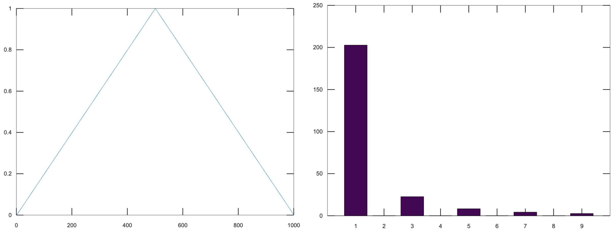
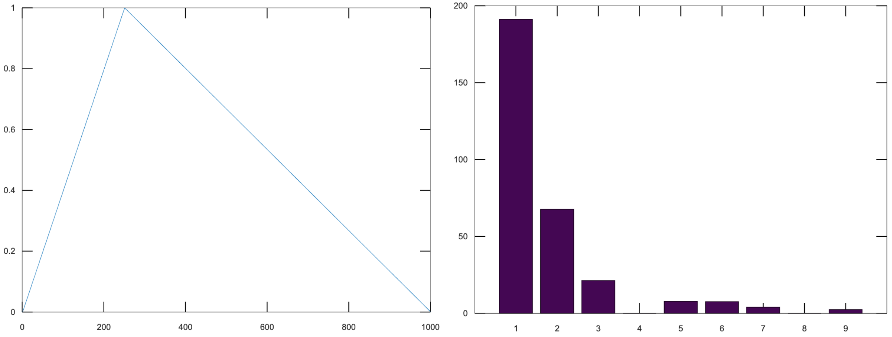
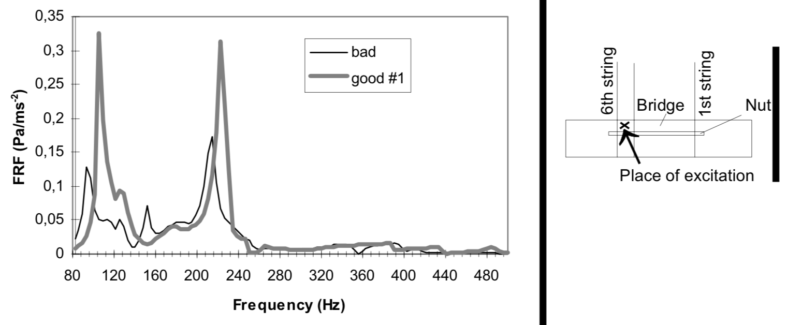
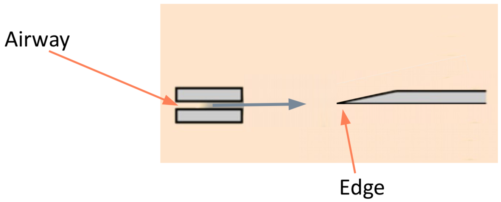
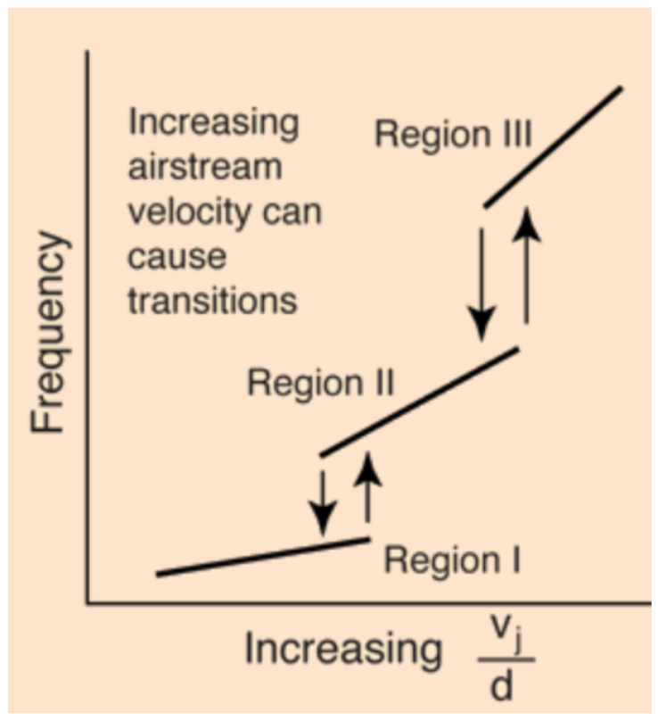
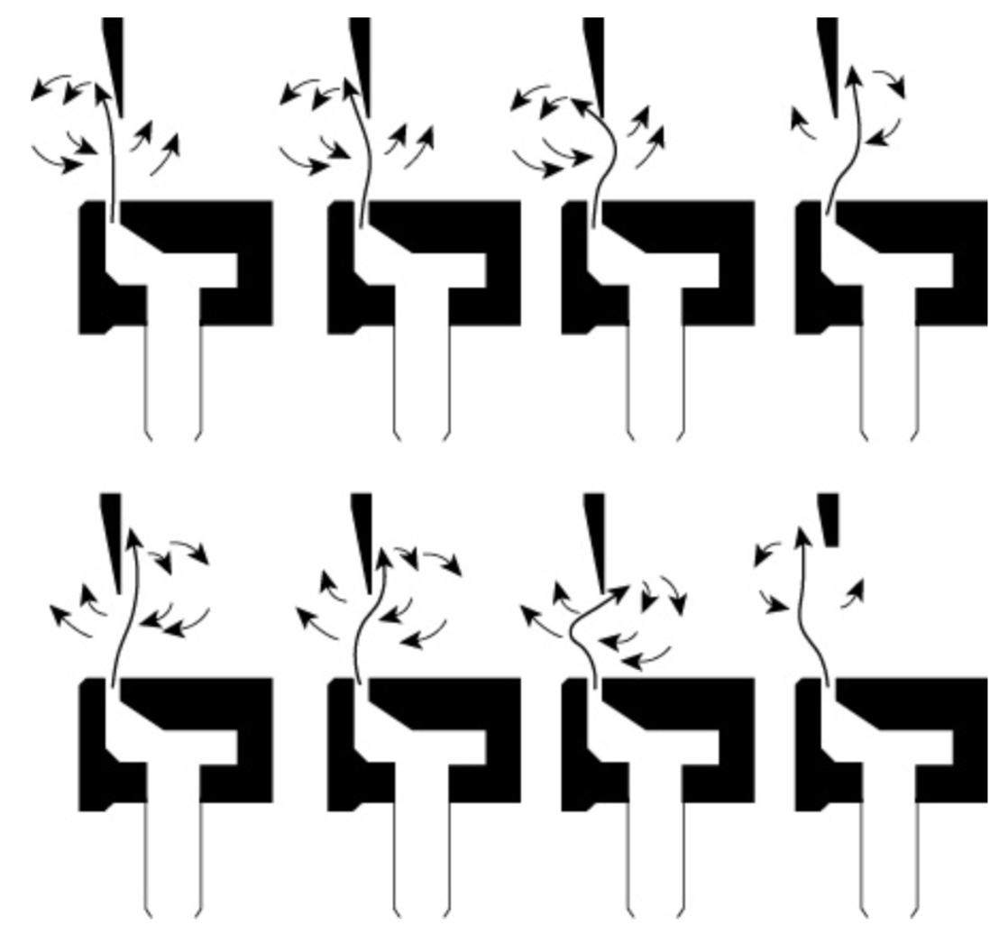

Acoustics Report TODO: Go back and add defs
Matt Dailis, Northeastern University MUSC2350, Spring 2020
Table of Contents
Preface
This is Matt Dailis's work for Acoustics and Psychoacoustics of Music taught by Victor Zappi1 at Northeastern University, Spring 2020.
In Section 1, I will describe my attempt at using additive synthesis to simulate the sound of a guitar. I jumped right into this without examining much prior work, so my approach was a little naive and primitive. I do explain concepts along the way, and I reference some alternative approaches at the end.
In Section 2, I will give a more concise description of edgetones and wind instruments, based largely on what we covered in class.
1 Simulating Strings
My intent is to attempt to simulate a guitar using purely math.
1.1 Getting set up with Octave
For this project, I used GNU Octave, an open source programming language and environment for mathematical modeling, based off of MATLAB.
Octave has an audioplayer function, which when provided with a
vector of floating point numbers between \(-1\) and \(1\), treats them as
a waveform and plays them back.
audioplayer (vector, bit_rate, bit_depth)
A sample is a discrete measurement of sound pressure level (SPL)
averaged over a predefined duration of time. The bit_rate variable
represents the number of samples to play per second. I chose to set
this to be \(44100\), which is a standard bit rate used for
CDs.2 The bit_depth
variable has to do with the precision of the floating point numbers
themselves.
1.2 Pure tones and equal-amplitude harmonics
My approach to simulating strings was to use additive
synthesis3. This means that I
attempted to simulate a vibrating string by building it up as a sum of
partials. To start, I generated a waveform for the the fundamental
frequency using octave's sinewave function (See Listing
1). Given a vector size and a period, it returns a set of
values between -1 and 1 in the form of a sine wave with the specified
period.
f1 = sinewave(bitRate * 4, bitRate / 440)
I defined my own convenience function puretone which would take the
bit rate, duration, and frequency and return the corresponding sine
wave (See Listing 2).
function puretone(seconds, frequency) sinewave(bitRate * seconds, bitRate/frequency); endfunction
Now I had the ability to make pure tones, but I wanted harmonics. A
harmonic is a partial whose frequency is an integer multiple of the
fundamental.4 We usually only care about
the first six harmonics or so, because after that they start to get
to very high frequencies near the edge of human hearing. I defined a
createharmonics function that returns a sum of six harmonics (See
Listing 3). Notice that the returned vector must
be divided by six to make sure the whole range of values is between
\(-1\) and \(1\).
createharmonics(duration, fundamental): f1 = puretone(duration, fundamental); f2 = puretone(duration, fundamental * 2); f3 = puretone(duration, fundamental * 3); f4 = puretone(duration, fundamental * 4); f5 = puretone(duration, fundamental * 5); f6 = puretone(duration, fundamental * 6); return (f1 + f2 + f3 + f4 + f5 + f6) / 6;
I was so excited about the fact that my equations were producing the pitches that I wanted that I created a sample song using this function.
A3 = createharmonics(0.5, 220); A4 = createharmonics(0.5, 440); A5 = createharmonics(0.5, 880); B4 = createharmonics(0.5, 495); C5 = createharmonics(0.5, 523.26); D4 = createharmonics(0.5, 293.33); D5 = createharmonics(0.5, 293.33 * 2); E4 = createharmonics(0.5, 330); E5 = createharmonics(0.5, 660); F5 = createharmonics(0.5, 348.84 * 2); GS4 = createharmonics(0.5, 415.305); aMinor = [A4, (C5 + E5) / 2, E4, (C5 + E5) / 2]; eMajor = [B4, (E5 + GS4) / 2, E4, (D5 + GS4) / 2]; dMinor = [A4, (D5 + F5) / 2, D4, (D5 + F5) / 2]; song = [aMinor, eMajor, aMinor, eMajor, dMinor, aMinor, eMajor, A4, E4, A3]; playSound(song, bitRate)
You can hear the result here:
After listening to the result, I could recognize this as music, but it sounded nothing like a guitar. What's missing?
First off, in a string, the relative amplitudes of the harmonics are not all the same.5 Secondly, for a plucked instrument, the amplitudes of all of the harmonics change over time, eventually diminishing to silence.6 Lastly, the soundboard of the instrument will act as a filter affecting the output of the instrument.7 Let's tackle these issues one by one.
1.3 Relative amplitudes of harmonics
First off, the fundamental frequency of a plucked string will always be the most prevalent harmonic.8 The relative amplitudes of harmonics of a plucked string depend on the pluck location.
We model a pluck as a "kink" in the string.9 The prevalence of each harmonic depends on whether the initial kink location is at one of that harmonic's nodes or antinodes. Put another way, it depends on the similarity of the string shape at the moment of the pluck to the shape of the resonant mode.
Similarity, in linear algebra, is defined as the dot product between two vectors. The more "aligned" those two vectors are, the higher their dot product.
If we take the fourier transform of the string shape, we should get an idea for which frequencies are represented. Let's first define the shape of our string.
Let's define a kink in terms of a piecewise function.
Let \(k\) be the kink location whose value is between \(0\) and \(1\), and \(L\) be the length of the string.
\[y_1={\frac x kL}, x \leq kL\]
\[y_2 = {\frac {1 - {\frac x L}} {1 - k}}, x > kL\]
The following pairs of graphs show the kink function on the left, and its FFT on the right. The only axis worth looking at is the x axis of the FFTs - each number corresponds to the harmonic index.
These images were generated using octave-online10 with the following call:
v = kink(1000, 0.1) bar(abs(fft(v-mean(v)))(1:10)(2:end))

Figure 1: kink(0.5) and its FFT
Notice that the fundamental is always the most prominent, but the behavior of the rest of the harmonics varies. Observe Figure 1 - the pluck location is in the center of the string, which emphasizes odd harmonics, and has no even harmonics because all even harmonics have a node in the center.

Figure 2: kink(0.25) and its FFT
Moving the pluck location to the quarter point of the string (Figure 2), we see more harmonics pop up, but the fourth and eighth (and all multiples of four) are still silent, because the kink location is at the node of the fourth harmonic.

Figure 3: kink(0.1) and its FFT
In Figure 3, all nine of the first harmonics are present. The tenth is not pictured, but it would be zero, because it has a node at the pluck location.
This is the result of scaling the harmonics using the weights from the FFT:
After listening to this result, I found that it sounded a little better - the fundamental was more prominent than before. It still did not sound like a physical string though.
1.4 Damping
When one plucks a string, it does not sustain the sound for very long. Immediately, it starts to lose energy to friction at the imperfect boundaries of the string, as well as friction with the fluid (air) in which it is vibrating.11 I hope that adding damping will at least make it sound plausible that the strings are being plucked.
Let's focus on the kinetic energy lost due to the motion of the bridge, since that is more significant than the energy lost to the air.12 The way we take into account the bridge motion is by modeling it as an impedance mismatch, similar to how we would model a tube open on one end. This results in an exponential decay.
function y = damping(x, dampingTime, bitRate) y = 0.5 ^ (x / (dampingTime * bitRate)); endfunction
In this model, all of the frequencies decay at the same rate, which isn't necessarily accurate, although looking at a the spectrum of plucking my guitar string13 I think this is close enough to the truth.
1.5 Soundboard
Okay, we've now made a generic plucked string instrument, but what makes a guitar a guitar? One of the aspects that has the biggest contribution to the timbre of a stringed instrument is its soundboard. A soundboard is a resonance chamber that takes the input vibration from a string and transforms its frequency spectrum, behaving as an acoustic filter. In a guitar, the string transfers its vibration through the bridge and into the top of the guitar. The top of the guitar is an idiophone14 that creates a pressure wave inside the body as it vibrates. It is the modes of this piece of wood plus the sound propagation inside of the body that together create this acoustic filter.15
To implement a filter in octave, I will use the signal library.

Figure 4: This diagram was taken from "Frequency Response Function Of A Guitar - A Significant Peak" By Samo Šali
More stuff on soundboards16
Guitar modes17
1.6 Excitation
2 Edgetones and Wind Instruments
A wind instrument is similar to a stringed instrument in that it has a sound source and a sound modifier. However, instead of having a vibrating soundboard, wind instruments typically have a tube that contains a one-dimensional air column through which sound propagates as a longitudinal wave.18
2.1 Sound Source
The sound source is responsible for generating a stream of vibrating air. We can categorize this generation into three phenomena: free edge oscillation, reeds, and vibrating lips.
2.1.1 Free edge oscillation
In free edge oscillation, a steady flow of air needs to hit a sharp object head-on (see Figure 5).

Figure 5: A narrow stream of air passes through an airway and hits a sharp edge head-on
When we talk about a "steady flow of air," we are talking about laminar flow. Laminar flow is when a fluid moves in smooth layers (laminae) and each layer is moving in the same direction as the whole fluid, meaning there are no cross-currents or eddies.19 This flow is laminar inside of the airway, but at some distance from the airway it becomes turbulent flow. Turbulent flow is when the motion of a fluid is chaotic and changing. The laminar flow gets a certain distance into the unconstrained air and loses its structure, and becomes turbulent.
If we place a sharp edge at approximately the distance from the airway at which the flow naturally becomes turbulent, we force the flow to pick one side of the edge. The eddies will increase in intensity on that side and cause the flow to flip to the other side (see Figure 7). This phenomenon will repeat in a periodic fashion.
We can describe the frequency of this periodic fluctuation as a ratio between the the velocity of the air flow, \(v\), and the distance between the airway and the edge, \(d\): \(f \propto {\frac v d}\).
This equation, however, is not 100% correct - the frequency is not continuous. As velocity increases, at a certain point, frequency will have a jump discontinuity (See Figure 6).

Figure 6: Frequency increases stepwise
2.1.2 Reeds
2.1.3 Vibrating lips
2.2 Sound Modifier
2.2.1 Edgetones
Edgetones are

Figure 7: Edgetone illustration from textbook
Footnotes:
plot function on my computer, I got a
segmentation fault…